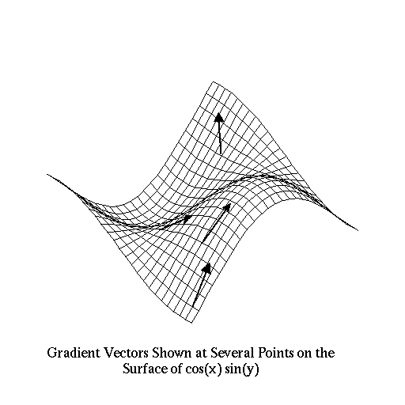
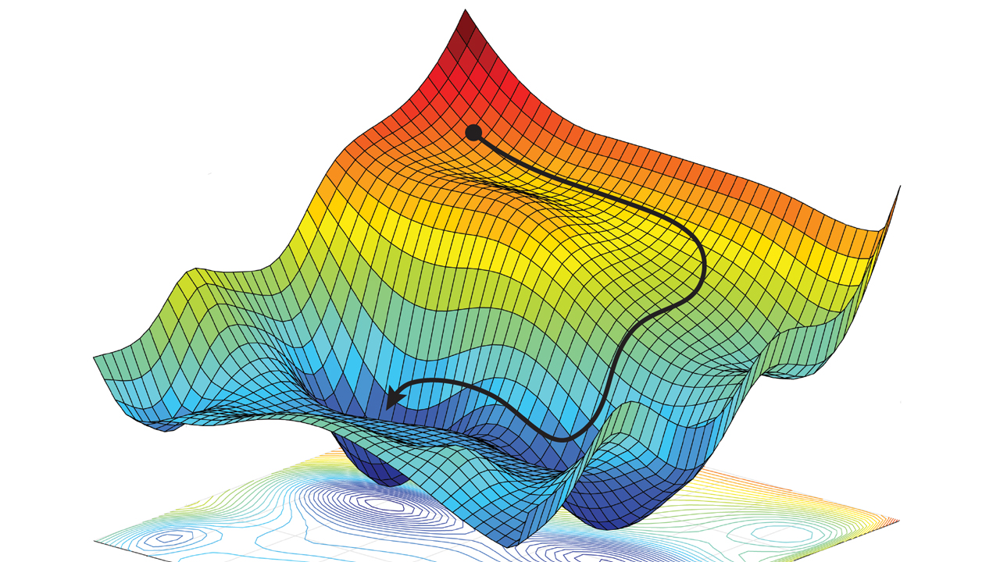

Ist das ein Graph oder kann das weg? Funktionales Deep Learning in Haskell
Raoul Schlotterbeck
Created: 2023-02-24 Fri 10:56
1. Neuronale Netze
neuralNet = layerL . ... . layer1 layer w b = fmap activationFunction . vectorAddition b . matrixVectorProduct w
=> Komposition purer Funktionen
2. Neuronale Netze
"… Schichten (die im modernen maschinellen Lernen als zustandsbehaftete Funktionen mit impliziten Parametern verstanden werden sollten) werden typischerweise als Python-Klassen dargestellt, deren Konstruktoren ihre Parameter erzeugen und initialisieren…"
"… layers (which in modern machine learning should really be understood as stateful functions with implicit parameters) are typically expressed as Python classes whose constructors create and initialize their parameters…" https://proceedings.neurips.cc/paper/2019/file/bdbca288fee7f92f2bfa9f7012727740-Paper.pdf
3. Training
- Finde Parameter \((w_i, b_i)\), so dass das NN auf einem gegebenen Trainingsdatensatz möglichst gute Ergebnisse liefert
Was gut ist, wird von einer (skalarwertigen) Fehlerfunktion beurteilt
=> \(argmin_{\omega \in \Omega} (loss \circ nn (\omega; data))\)
4. Gradient Descent
\(w' = w - \alpha * \frac {\partial f}{\partial w}\)
|  |  |
5. Automatic Differentiation
Ableitung einer Komposition von Funktionen ist Komposition derer Ableitungen
\(nn = l_L \circ ... \circ l_1\)
\(Dnn = Dl_L \circ ... \circ Dl_1\)
- Funktionskomposition ist assoziativ, d.h. wir können in bliebiger Reihenfolge auswerten
- Aufwand vorwärts (rechts-assoziativ) abhängig von Eingangsdimension (= Anzahl der Parameter), rückwärts (links-assoziativ) abhängig von Ausgangsdimension (= 1)
6. Reverse Automatic Differentiation
\(Dnn = Dl_L(l_{L-1}(...)) \circ ... \circ Dl1(v)\)
Um \(Dl_i\) zu berechnen, müssen wir die Ausgabe von \(l_{i - 1}\) kennen
=> "Wengert-Liste"
Deep Learning Bibliotheken sind im Wesentlichen Werkzeuge zur Generierung und Verwaltung von Berechnungsgraphen.
7. Deep Learning mit TensorFlow

8. Deep Learning mit TensorFlow
class SimpleNeuralNetwork: def __init__(self, dim): self.dims = [dim, dim, dim // 2, dim // 2, dim] self.weights = [] self.biases = [] for i in range(4): self.weights.append( tf.Variable(tf.random.normal(shape=(self.dims[i+1],self.dims[i]))) ) self.biases.append( tf.Variable(tf.random.normal(shape=(self.dims[i+1],1))) ) def __call__(self, x): inputs = tf.convert_to_tensor([x], dtype=tf.float32) out = tf.matmul(self.weights[0], inputs, transpose_b=True) + self.biases[0] out = tf.tanh(out) out = tf.matmul(self.weights[1], out) + self.biases[1] out = tf.nn.relu(out) out = tf.matmul(self.weights[2], out) + self.biases[2] out = tf.tanh(out) return tf.matmul(self.weights[3], out) + self.biases[3]
9. Blick hinter die Kulissen?
10. Deep Learning mit TensorFlow
- Der Code ist sehr unübersichtlich und kompliziert.
- Große Teile des Codes haben gar nichts mit dem eigentlichen Netz zu tun, sondern mit dem TensorFlow-Graphen.
- Der Code ist sehr spezialisiert auf TensorFlow-interne Typen
- Generalisierung und Abstraktion ist in diesem Kontext kaum noch möglich.
- Die einzelnen Teile des Graphen lassen sich überhaupt nicht mehr separat testen
- anfällig für teils kryptische Fehlermeldungen zur Laufzeit
11. Deep Learning mit ConCat
(@.) :: (q s -> b -> c) -> (p s -> a -> b) -> ((q :*: p) s -> a -> c) (g @. f) (q :*: p) = g q . f p type SimpleNeuralNetworkPars (f :: Nat -> * -> *) n m = ( (f m --+ f n) :*: (f m --+ f m) :*: (f n --+ f m) :*: (f n --+ f n) ) simpleNeuralNetwork :: (KnownNat n, KnownNat m, Additive numType, Floating numType, Ord numType) => SimpleNeuralNetworkPars f n m numType -> f n numType -> f n numType simpleNeuralNetwork = affine @. affTanh @. affRelu @. affTanh
12. Deep Learning mit ConCat
- Der Code ist auf die wesentlichen Konzepte reduziert.
- Das Neuronale Netz ist eine pure, ganz normale Haskell-Funktion, die das, und nur das macht, was ein Neuronales Netz so macht.
- Die API für das Neuronale Netz ist demnach einfach Haskell.
- Die Typen sind generisch gehalten.
- Das Neuronale Netz lässt sich leicht testen.
13. ConCat
…
14. ConCat
magSqr :: Num a => (a, a) -> a magSqr (a, b) = sqr a + sqr b
=> ConCat:
\(magSqr = addC \circ (mulC \circ (exl \triangle exl) \triangle mulC \circ (exr \triangle exr))\)

15. Ableiten mit ConCat
newtype GD k a b = D {unD :: a -> b :* (a `k` b)}
~ \(a \mapsto (f(a), f’(a))\)
instance Category k => Category (GD k) where ... D g . D f = D (\ a -> let (b, f') = f a (c, g') = g b in (c, g' . f') )
instance {-# overlappable #-} (LinearCat k s, Additive s, Num s) => NumCat (GD k) s where ... mulC = D (mulC &&& \ (u,v) -> scale v |||| scale u)
16. Forward Automatic Differentiation mit ConCat

17. Reverse Automatic Differentiation mit ConCat
newtype Dual k a b = Dual (b `k` a) instance Category k => Category (Dual k) where ... (.) = inAbst2 (flip (.)) instance CoproductPCat k => ProductCat (Dual k) where ... exl = abst inlP
18. Reverse Automatic Differentiation mit ConCat

19. Reverse Automatic Differentiation mit ConCat
grad :: Num s => (a -> s) -> (a -> a) grad = friemelOutGrad . toCcc @RAD nnGrad :: paramType -> paramType nnGrad = grad (loss . nn)
20. TF vs ConCat? (Adam, Parameter, composeRAD, …)
21. Beschleunigtes Deep Learning in Haskell
accelerate …